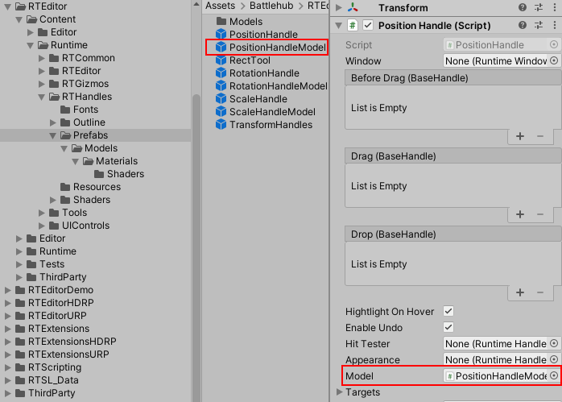
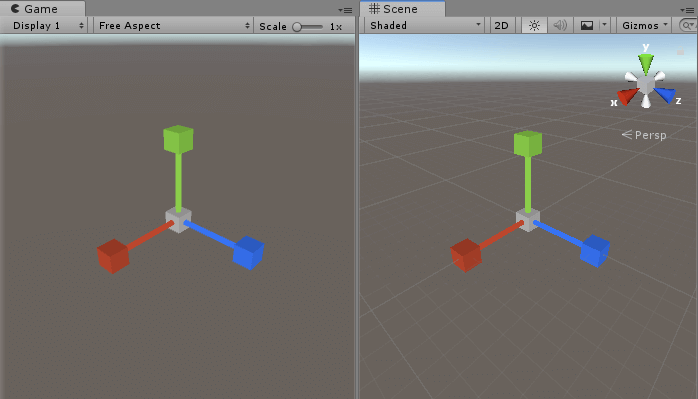
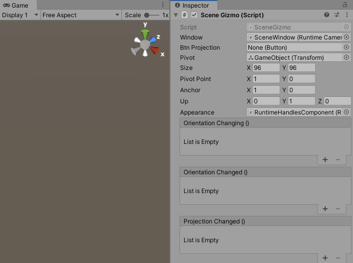

#Transform Handles Docs ##Overview
Runtime Transform Handles are the runtime 3D controls that are used to manipulate items in the scene. There three built-in transform tools to position, rotate and scale object via transform component. Another special built-in tool - the rect tool allows you to move and change scale of game objects. Supplementary controls such as scene gizmo, selection gizmo and grid allows to change viewing angle and projection mode, identify selected objects and orientate in scene space. Another important components: selection component, scene component and handles component allows to select objects, navigate in scene and change transform handles appearance. Scripts, prefabs and example scenes for transform handles can be found in Assets/Battlehub/RTHandles folder.
Note
Runtime Transform Handles are simply referred as transform handles through this text
Here is how transform handles and components rendered in the game view:

All in one:

##Getting Started
Here are four simple steps to get started with transform handles:
- Create transform handles using Tools->Runtime Handles->Create.

- Create and select Game Object.

- Enable object editing with Tools->Runtime Handles->Enable Editing.

- Hit play. After clicking on the game object in the game view you should see the following:

Following actions available by default:
| Action | Input |
|---|---|
| Select | Left-click |
| Move (Pan) | Hold middle mouse button, then drag |
| Flythrough | Click and hold the right mouse button. Move around using mouse and WSAD keys. |
| Orbit | Hold Alt+left-click, then drag |
| Zoom | Use the scroll wheel |
| Undo | Shift + Z (Ctrl + Z in player) |
| Redo | Shift + Y (Ctrl + Y in player) |
Note
Example scenes can be found in Assets/Battlehub/RTEditorDemo/Content/Runtime/RTHandles
##Base Handle
This is the base class for position, rotation, scale transform handles. Therefore all transform handles have following settings:
Window- reference to the window. Interaction with transform handle allowed only in case referenced window is active.HighlightOnHover- bool value. If true then transform handles will be highlighted on pointer over. Set it to false if touch input is used. (default: true)Appearance- reference to the runtime handles component. Various visual settings.Model- reference to the prefab with BaseHandle model component attached. If Model is set then default rendering procedure will be disabled and prefab instance will be rendered instead.Targets- array of transforms to be modified by transform handle.GridSize- float value used in unit-snapping mode. By default Unit-snapping mode is activated with 'Shift' key.BeforeDrag- event raised before transform handle drag.Drag- event raised each frame during drag and drop operation.Drop- event raised when drag and drop operation completed.
##Position Handle
To create a position handle, do the following:
- Create a new Game Object.
- Add Assets/Battlehub/RTEditor/Runtime/RTHandles/PositionHandle component.

The colors and scale of the transform handles can be adjusted using Runtime Handles Component, and the proportions of individual parts such as lines and arrows can be adjusted using the Position Handle Model script attached to PositionHandleModel.prefab.
To change the proportions of the position handle, modify Assets/Battlehub/RTEditor/Content/Runtime/RTHandles/Prefabs/
PositionHandleModel.prefab and add a reference to it using Model field of the Position Handle.

Position Handle Model script has following fields:
Radius- thickness of the line (default: 0,01).Length- lenght of the line (default: 1).Arrow Radius- radius of the arrow (default 0,075).Arrow Length- lenght of the arrow (default 0,2).Quad Length- size of xy, xz and yz quads (default 0,2).
Adjustments example:

##Rotation Handle
To create a rotation handle, do the following:
- Create a new Game Object.
- Add Assets/Battlehub/RTEditor/Runtime/RTHandles/RotationHandle component.

The colors and scale of the transform handles can be adjusted using Runtime Handles Component, and the proportions of individual parts can be adjusted using the Rotation Handle Model script attached to RotationHandleModel.prefab.
To change the proportions of the rotation handle, modify Assets/Battlehub/RTEditor/Content/Runtime/RTHandles/Prefabs/RotationHandleModel.prefab and add a reference to it using Model field of the Rotation Handle.

Rotation Handle Model script has following fields:
Minor Radius- line thickness (default: 0,0075).Major Radius- x-axis, y-axis, z-axis, inner circle radius (default: 1).Outer Radius- outer circle radius (default: 1,11).
Adjustments example:

##Scale Handle To create a scale handle, do the following:
- Create a new Game Object.
- Add Assets/Battlehub/RTEditor/Runtime/RTHandles/ScaleHandle component.

The colors and scale of the transform handles can be adjusted using Runtime Handles Component, and the proportions of individual parts can be adjusted using the Scale Handle Model script attached to ScaleHandleModel.prefab.
To change the proportions of the scale handle, modify Assets/Battlehub/RTEditor/Content/Runtime/RTHandles/Prefabs/ScaleHandleModel.prefab and add a reference to it using Model field of the Scale Handle.

Scale Handle Model script has following fields:
Radius- line thickness (default: 0,01).Length- line length (default: 1).Arrow Radius- cap size (default: 0,05).
Adjustments example: 
##Rect Tool
To create a rect tool, do the following:
- Create a new Game Object.
- Add Assets/Battlehub/RTEditor/Runtime/RTHandles/RectTool component.
- Set Targets field.
The colors and scale of the rect tool can be adjusted using Runtime Handles Component.
##Locking Axes
The Assets/Battlehub/RTEditor/Runtime/RTCommon/LockAxes component prevents the modification of certain transformations with the position, rotation or scale handles. Attach it to selectable Game Object and choose axes you want to lock.

##Scene Gizmo
To create a scene gizmo, do the following:
- Create a new Game Object.
- Add Assets/Battlehub/RTEditor/Runtime/RTHandles/SceneGizmo component.

Scene gizmo script has following fields:
Window- reference to the window. Interaction with scene gizmo allowed only in case referenced window is active.Btn Projection- UGUI button to switch between orthographic and perspective projection (default: None).Pivot- transformation of the object around which the camera rotates.Size- scene gizmo rect size (default: 96,96).Pivot Point- scene gizmo rect pivot point (default: 1,0).Anchor- scene gizmo rect anchor (default: 1,0).Appearance- reference to the runtime handles component. Various visual settings.Orientation Changing- event fires when camera rotation and position are about to be changed.Orientation Changed- event fires when camera rotation and position are changed.Projection Changed- event fires when camera projection changed.
##Grid
To create a grid, do the following:
- Create a new Game Object.
- Add Assets/Battlehub/RTEditor/Runtime/RTHandles/SceneGrid component.

To change color of the grid use Grid Color field of runtime handles component.
##Runtime Handles Component
Use this script to change appearance of transform handles:
- Create a new Game Object.
- Add Assets/Battlehub/RTEditor/Runtime/RTHandles/RuntimeHandlesComponent component

Runtime Handles Component script has following fields:
Colors- transform handles, scene gizmo, selection gizmo and grid colors.Handle Scale- transform handles scale (default: 1).Scene Gizmo Scale- scale of the scene gizmo (default: 1).Selection Margin- scale of clickable area around transform handle axes (default: 1).Invert Z Axis- invert position handle z-axis (default: false).Position Handle Arrows Only- hide xy, yz and xz quads (default: false).
##Runtime Selection Component
This is the implementation of default selection behavior. To enable default selection behavior:
- Create a new Game Object.
- Add Assets/Battlehub/RTHandles/Scripts/RuntimeSelectionComponent.
- Choose objects you want to make selectable and click Tools->Runtime Handles->Enable Editing.
- Alternatively add Assets/Battlehub/RTEditor/Runtime/RTCommon/ExposeToEditor.
- To visualize selection add OutlineManager to object with Runtime Selection Component.

Following actions defined in Assets/Battlehub/RTHandles/Scripts/Input/RuntimeSelectionInput :
| Action | Input |
|---|---|
| Select | Left-click |
| Select multiple | Hold Shift + left-click (Ctrl + left-click in player) |
| Select all | Hold Shift + A (Ctrl + A in player) |
Runtime Selection Component script has following fields:
Window- window reference.Position Handle- position handle reference.Rotation Handle- rotation handle reference.Scale Handle- scale handle reference.Rect Tool- rect tool reference.Box Selection- box selection reference.Grid- scene grid reference.
To switch between transform handles using Q W E R T keys, do the following :
- Add Assets/Battlehub/RTEditor/Runtime/RTHandles/Input/RuntimeToolsInput component.
Note
If you wish to switch between transform handles programmatically proceed to -> this <- section.
Note
If you wish to change selection programmatically proceed to -> this <- section.
##Box Selection
To create a Box Selection, do the following:
- Create a new Game Object.
- Add Assets/Battlehub/RTEditor/Runtime/RTHandles/BoxSelection component.

Note
Game Objects without ExposeToEditor component are invisible to Box Selection.
Note
Box Selection use Runtime Selection API to store selected objects.
Box Selection has following fields:
Window- reference to the window.Graphics- sprite which is used to render box selection.Use Camera Space- use camera space for rendering (true) or screen space (false) (default:true)Box Selection Method- box selection method:- Vertex - use MeshFilter.sharedMesh.vertices (default);
- Loose Fitting - use renderer bounds and collider (default);
- Bounds Center - use bounds center;
- Transform Center - use transform center;
Use following code to filter objects selected using Box Selection:
using Battlehub.RTHandles;
using UnityEngine;
//In this example objects with name "Capsule" are filtered out
public class FilteringBehaviour : MonoBehaviour
{
[SerializeField]
private BoxSelection m_boxSelection;
private void Start()
{
m_boxSelection.Filtering += OnFiltering;
}
private void OnDestroy()
{
if (m_boxSelection != null)
{
m_boxSelection.Filtering -= OnFiltering;
}
}
private void OnFiltering(object sender, FilteringArgs e)
{
if (e.Object.name == "Capsule")
{
e.Cancel = true;
}
}
}
##Runtime Scene Component
Runtime Scene Component extends Runtime Selection Component and enables mouse orbiting, movement and zoom.
To create a Runtime Scene Component, do the following:
- Create a new Game Object
- Add Assets/Battlehub/RTEditor/Runtime/RTHandles/RuntimeSelectionComponent.

Runtime Scene Component has following fields:
View Texture- cursor which is visible during mouse orbiting.Move Texture- cursor which is visible during movement.Free Move Texture- cursor which is visibile in flythrough mode.Scene Gizmo- reference to the Scene Gizmo.
Actions defined in Battlehub/RTEditor/Runtime/RTHandles/Input/RuntimeSceneInput :
| Action | Input |
|---|---|
| Focus | Press F |
| Snap To Grid | Press Shift + G (Ctrl + G in player) |
| Move (Pan) | Hold middle or right mouse button, then drag |
| Flythrough | Click and hold the right mouse button. Move around using mouse and WSAD keys. |
| Orbit | Hold Alt+left-click, then drag |
| Zoom | Use the scroll wheel |